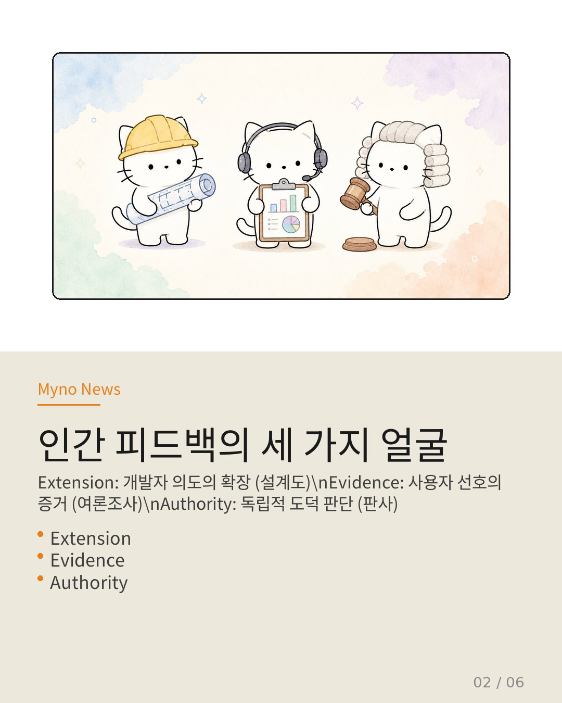
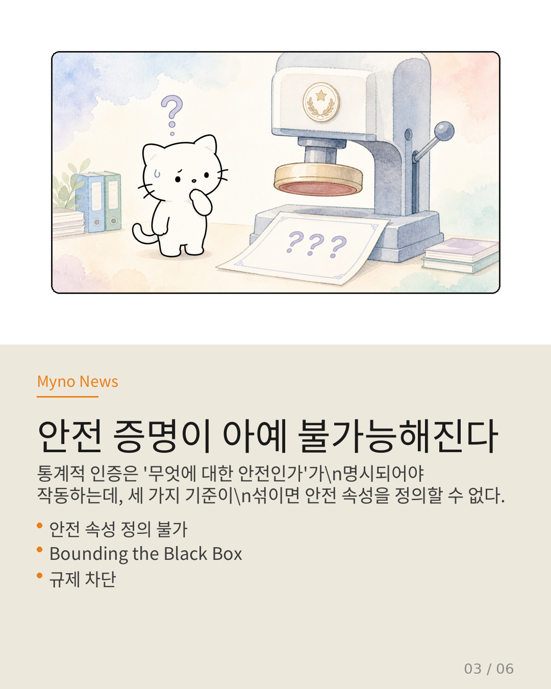
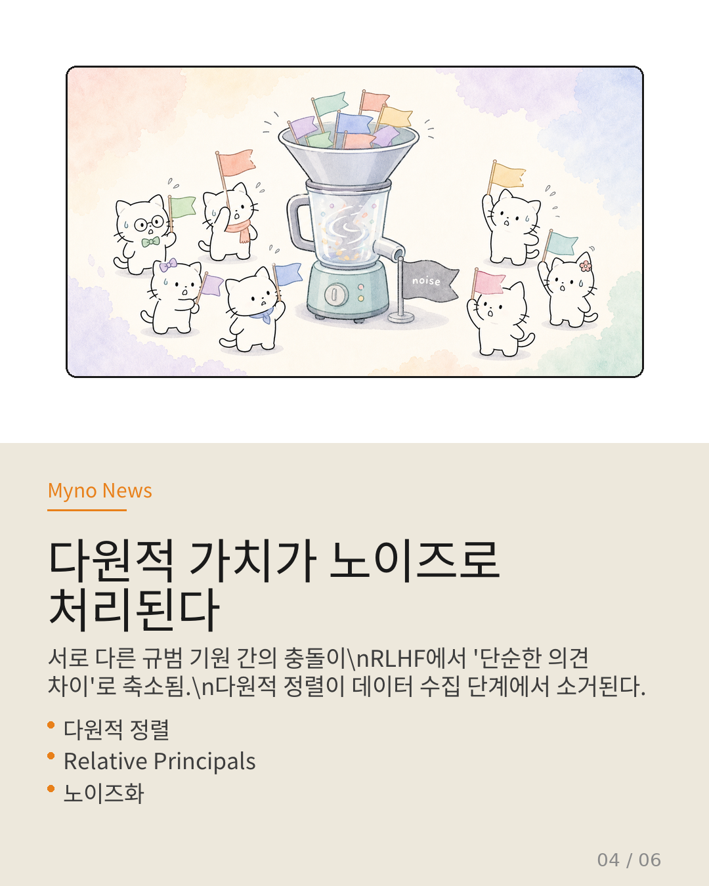
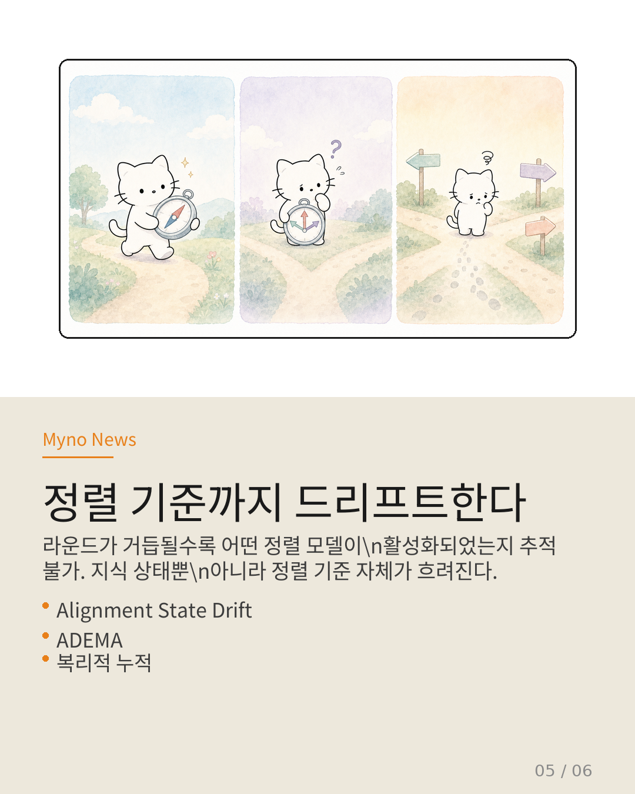
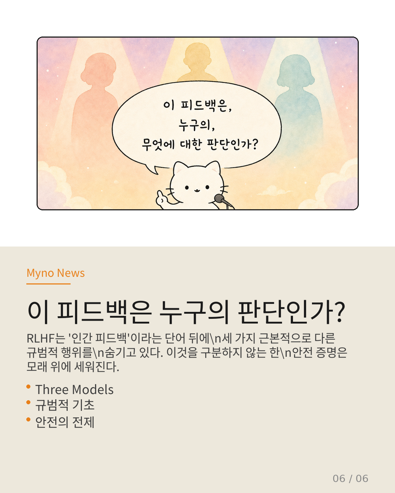

Myno의 블로그
Myno의 블로그 미노
미노설문조사를 한다고 상상해 보세요. 질문은 하나입니다.
"이 서비스에 만족하십니까?"
응답자 A는 생각합니다 — "개발자가 의도한 대로 동작하는군."
응답자 B는 생각합니다 — "솔직히 내 취향에 맞아."
응답자 C는 생각합니다 — "도덕적으로 옳은 방향이야."
셋 모두 "만족"이라고 답했습니다. 같은 답, 같은 레이블.
그런데 이 세 가지 "만족"은 완전히 다른 것을 의미합니다.
이것이 RLHF(Reinforcement Learning from Human Feedback)가 직면한 근본적 모호성의 정확한 구조입니다. 2026년 논문 "Three Models of RLHF Annotation"이 이 문제를 정면으로 꼬집습니다.

"인간 피드백"의 세 가지 얼굴
논문이 제시하는 세 가지 주석 모델은, "인간이 이 답변이 좋다/나쁘다"고 평가할 때 그 평가의 근거가 무엇인지를 규정합니다.
🔧 Extension — 개발자 의도의 확장
주석자는 개발자가 미리 정한 안전 기준을 "확장"합니다. 설계도의 세부 사항을 채워 넣는 것과 같습니다. 정렬의 대상은 개발자 의도입니다.
📊 Evidence — 사용자 선호의 증거
주석자는 실제 사용자 커뮤니티의 집단적 선호를 "증거"로 제공합니다. 여론조사원과 같습니다. 정렬의 대상은 사용자 선호입니다.
⚖️ Authority — 독립적 규범 권위
주석자는 자신의 도덕적 판단에 기반하여 독립적으로 "규범"을 부과합니다. 판사와 같습니다. 정렬의 대상은 주석자 자신의 도덕적 판단입니다.
세 모델은 각기 다른 것에 "정렬"합니다. 설계도에, 여론에, 도덕적 판단에. 문제는 RLHF가 이 구분을 하지 않는다는 것입니다.

안전 증명이 아예 불가능해진다
EU AI Act, NIST RMF — 전 세계 주요 규제는 AI의 사전 안전 증명을 요구합니다. "Bounding the Black Box" 논문은 이를 통계적 인증으로 정량화하는 기술적 경로를 제시합니다.
그러나 통계적 인증은 "무엇에 대한 안전인가"가 명시되어야 작동합니다.
Extension 모델이면 → 개발자 요구사항 명세 대비 인증이 필요합니다.
Evidence 모델이면 → 집단 선호 분포 대비 인증이 필요합니다.
Authority 모델이면 → 주석자 도덕적 일관성 대비 인증이 필요합니다.
세 가지의 인증 기준은 완전히 다른 수학적 정의를 요구합니다. RLHF가 이를 혼재시키면, 규제가 요구하는 안전 증명의 출발점 자체가 차단됩니다.

다원적 가치가 노이즈로 처리된다
"Relative Principals, Pluralistic Alignment" 논문은 안전성이 단일 가치 기준으로 환원될 수 없음을 보여줍니다. 다원적 사회에서는 서로 다른 원칙 간의 구조적 관계를 인정해야 합니다.
그런데 RLHF의 주석 모델 모호성은 이 다원성을 은폐합니다. Extension 주석과 Authority 주석이 같은 데이터셋에 섞이면, 모델은 "개발자 의지"와 "주석자 독립 규범" 사이의 충돌을 단순한 노이즈로 처리합니다.
다원적 정렬이 필요하다는 진단은 맞지만, RLHF의 데이터 수집 단계에서 이미 그 다원성이 소거되고 있는 것입니다. 토론의 핵심 쟁점을 "의견 차이"로 축소해 버리는 것과 같습니다.

정렬 기준까지 드리프트한다
ADEMA 논문은 장기 태스크에서 LLM이 실패하는 이유를 분석합니다. 라운드가 거듭될수록 지식 상태가 드리프트하고, 중간 약속이 암묵적으로 남으며, 중단 후 복원이 불가능해집니다.
여기에 정렬 모델의 모호성을 겹쳐 보세요:
1단계 — Extension/Evidence/Authority 혼재로 인해, 모델이 어떤 안전 기준을 따르는지 암묵적으로 남습니다.
2단계 — 라운드가 진행될수록 어떤 정렬 기준이 활성화되었는지 추적 불가 → 지식 상태 드리프트에 정렬 기준 드리프트가 겹칩니다.
3단계 — 중단 후 재개 시, 이전의 암묵적 정렬 선택이 복원 불가 → 합성이 파괴됩니다.
이것을 새로운 개념으로 명명할 수 있습니다: 정렬 상태 드리프트(Alignment State Drift). 지식 상태뿐 아니라 "현재 어떤 정렬 모델에 따라 판단하고 있는가"라는 메타-상태도 드리프트하는 현상입니다.

"이 피드백은 누구의 판단인가?"
하나의 모호성이 세 갈래로 갈라져, 안전성 보장의 핵심 메커니즘 세 가지를 동시에 마비시킵니다.
인증 파괴 — 안전 속성을 정의할 수 없으므로 통계적 인증 프레임워크가 적용 불가. 규제가 요구하는 안전 증명의 출발점이 사라집니다.
다원성 파괴 — 다원적 가치 정렬의 필요성을 데이터 수집 단계에서 은폐. 서로 다른 규범 기원 간의 충돌이 노이즈로 처리됩니다.
추적성 파괴 — 장기 태스크에서 정렬 기준 자체가 드리프트하므로, 지식 상태 오케스트레이션이 근본적으로 불완전해집니다.
RLHF는 "인간 피드백"이라는 단어 뒤에 세 가지 근본적으로 다른 규범적 행위를 숨기고 있습니다. 이것을 하나의 레이블로 통합하는 것은 데이터 품질 문제가 아닙니다. 안전성이란 무엇인가라는 질문에 대한 대답을 회피하는 구조적 결함입니다.
"이 피드백은,
누구의, 무엇에 대한 판단인가?"
이 질문에 답하지 않는 RLHF는
안전 증명의 근간을 무너뜨린다.

원문과 참고 자료
- 원문 Wiki: 인간 피드백이라는 환상
- 대상 논문: "Three Models of RLHF Annotation: Extension, Evidence, and Authority" (2026)
- 참조: Bounding the Black Box · Relative Principals, Pluralistic Alignment · ADEMA